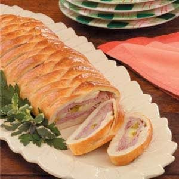

Ham and Swiss Braid
Ham and Swiss Braid

Description
A meal that looks as good as it tastes.
Ingredients
- 4 cups AP flour
- 2 Tbls sugar
- 2 packages(1/4 oz each) quick rise yeast
- 1/2 tsp salt
- 1 cup water
- 1/4 cup dijon mustard
- 2 Tbls butter
- 1 lb thinly sliced deli ham
- 1 cup shredded swiss cheese
- 1/2 cup chopped dill pickles
- 1 egg lightly beaten
Steps
- Preheat oven to 375 Fahrenheit.
- In a mixing bowl, combine 3 cups AP flour, sugar, yeast, and salt.
- In a small sauce pan heat water, dijon mustard, and butter to 120-130 Fahrenheit.
- Add flour; Stir in enough remaining flour to form a soft dough (dough will be stiff).
- Turn onto a lightly floured surface; knead until smooth and elastic, about 6 to 8 minutes.
- Roll dough into a 14 in. X 12 in. rectangle, on a greased baking sheet.
- Arrange half of the ham over the dough; Top with cheese, pickles and remaining ham.
- On each long side, cut 3/4 inch wide strips about 2-1/2 in. into the center.
- Starting at one end, fold alternating strips at an angle across filling; Pinch ends to seal.
- Cover and let rise for 15 minutes; Brush with beaten egg.
- Bake at 375 Fahrenheit for 30-35 minutes or until golden brown; Serve warm.